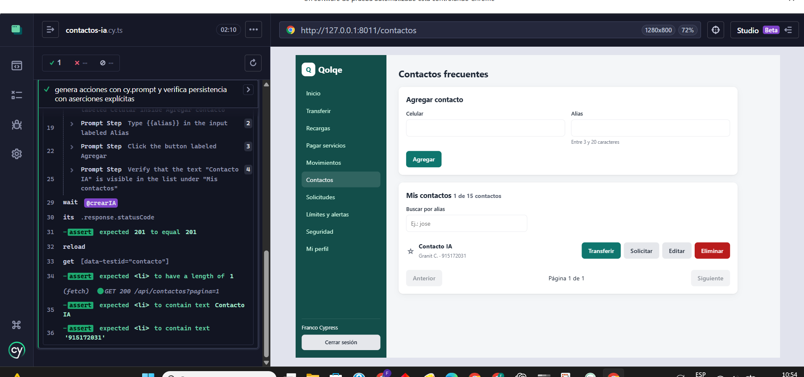

DE LA INTERFAZ A LA EVIDENCIA
Cypress en Qolqe
Flechas ← → para avanzar. Esc para salir de pantalla completa. Los comandos se copian y se ejecutan en PowerShell.
EJECUCIÓN REAL
Comandos para la exposición
La página muestra instrucciones y evidencias. No inicia pruebas desde el navegador. Ejecuta un modo a la vez y cierra Cypress antes de iniciar el siguiente.
RESULTADO LOCAL
Reporte de la sesión
Este panel consulta reports/cypress/latest.json. Revisa el modo y la fecha: un archivo anterior no demuestra una ejecución de hoy.
Si acabas de ejecutar failure, el último reporte será el fallo didáctico. Para volver a mostrar la suite convencional, ejecuta regression y después report.
IMPLEMENTACIÓN
Archivos para sustentar el patrón
Los enlaces abren el código versionado en tu copia local. No es necesario memorizarlo: ubica preparación, acciones, aserciones y configuración.
ARCHIVO DE EVIDENCIA
IA aprobada en una ejecución anterior
